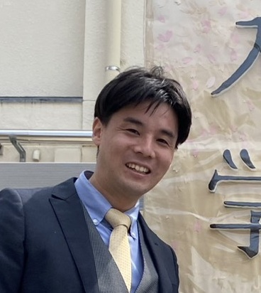

事業内容
- 大人・子供向けプログラミング教室
- ラズパイ・Arduinoによる電子工作レクチャー
- ご希望の言語のプログラミング指導
- GeminiなどAI活用コーディング講座
- マイクラのコマンド講座、レッドストーン回路講座
- 3Dプリンタ・レーザーカッター制作補助
- 持ち込みデータで利用だけもOK
CAD技術必須。簡単なものはレクチャー可能
- 持ち込みデータで利用だけもOK
- Webデザイン・制作代行
- 基板設計・中国への基板発注サポート
下記からご興味がある項目を受講できます。ご相談ください。
扱える言語・技術
C言語
Python
VBA
C#
JavaScript
HTML
GAS
営業日・時間・場所
- 土曜日：9:00-18:00 ※
- 日曜日：15:00-18:00 ※
※副業として運営しています。上記以外のご希望のお時間はお気軽にご相談ください。
場所： 名古屋市昭和区吹上町1-10
※オンラインも可能です。
教室の想い
『ものづくりの楽しさを地域の方々や次世代に伝えたい。』
そんな想いで教室を「えいっ」と開きました。
ものづくりの楽しさを一緒に感じ、自分が作りたいものを形にしませんか？
何を作ったらいいか分からない・・・？
私も同じでした。でも、やれることが増えていくと作りたいものが自然と湧き出てきます。不思議。
さらに、作ったもので人を笑顔にできたら素敵ですよね。
PC未経験の大人から、エンジニア志望のお子様まで大歓迎です。
3Dプリンタ・レーザーカッターもありますよ！
受講料・持ち物
- 大人：3,000円 / 1時間（体験無料期間あり）
- 学生：1,500円 / 1時間（体験無料期間あり）
- 持ち物：ノートPC（無くてもOK）
講師の経歴

- 鈴木 拓也
- 1989年 神奈川県茅ケ崎市生まれ
- 大学卒業後、プリンタの組み込みプログラマとして勤務
- 2026年 副業としてプログラミング教室を運営。講師は私1人です。
- 趣味はランニングと電子工作。2児のパパ
お問い合わせ
ご質問・ご相談などお気軽にどうぞ。
フォーム： こちらをクリック